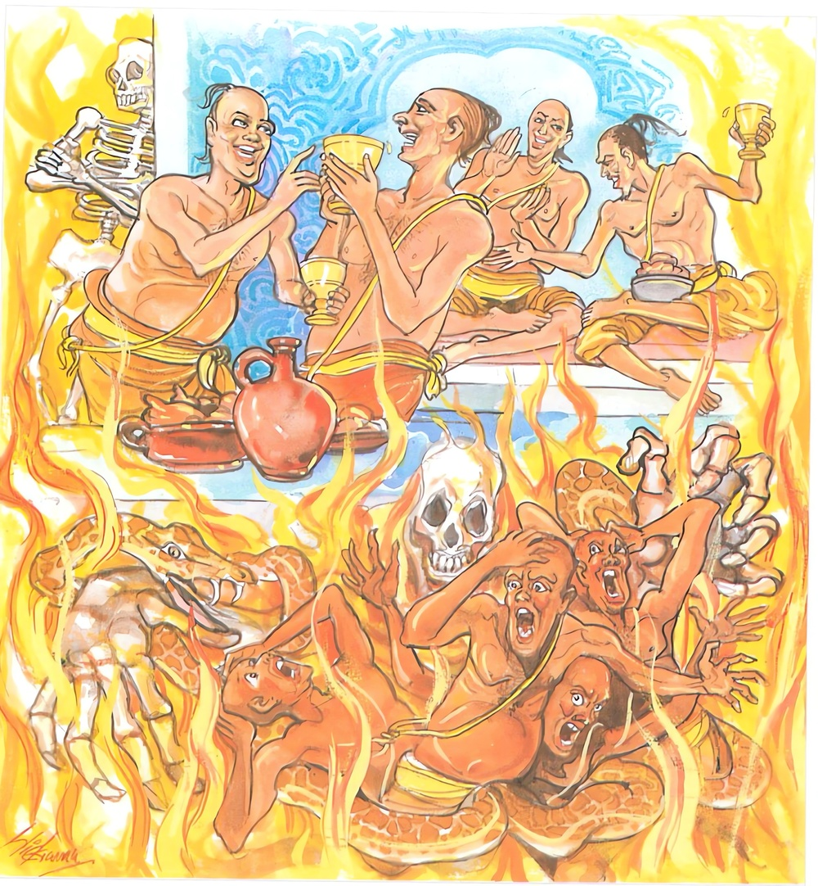

22-2 කාසාවකණ්ඨයෝ
මෙම කතාව ධම්මපද අටුවාවෙන් ද කියවන්න.
කාසාවකණ්ඨා බහවො පාපධම්මා අසඤ්ඤතා
පාපා පාපෙහි කම්මෙහි නිරයං තෙ උපපජ්ජරෙ.
කසාවතින් වෙළන ලද ග්රීවා ඇති (හෙවත් දසරුවෙහි ලූ කසා කඩ ඇති) ලාමක ස්වභාවය ඇති (මහණ පිළිවෙතැ නොයෙදුනු) කායවාක් සංයම රහිත පුද්ගලයෝ බොහෝ වූහ. ඒ පාප පුද්ගලයෝ (තමන්ගේ) පව් කම්වලින් (මරණින් මතු) නිරයට යන්නාහ.

දවසෙක මෞද්ගල්යායන මහාස්ථවිරයන් වහන්සේ ලක්ෂණ මහාස්ථවිරයන් වහන්සේ සමග ගිජුකුළු පව්වෙන් පස්නා සේක් අට්ඨිසඞ්ඛලික ප්රේතයන්ගේ අත්බැව් දැක සිනා පහළ කළ සේක. ඒ දුටු ලක්ෂණ මහාස්ථවිරයන් වහන්සේ සිනාසීමෙහි හේතු විචාළ ක්ලහි “ඇවැත්නි! සිනාසීමෙහි හේතු කියන්නට මේ දැන් කාලය නො වේ, බුදුරජුන් වෙත දී එය විචාරවු”යි කියා දෙදෙනා වහන්සේ ම බුදුරජුන් වෙත ගියහ. එහිදී ලක්ෂණ ස්ථවිරයන් වහන්සේ විසින් විචාරණු ලැබූ මෞද්ගල්යායන ස්ථවිරයන් වහන්සේ අට්ඨිසඞ්ඛලික ප්රේතයන් දුටුබව කියා, “ඇවැත්නි! ගිජුකුළු පව්වෙන් බසිද්දී මම අහස යන මහණකු දුටුවෙමි, ඔහුගේ සිරුර ගින්නෙන් ඇවිළුනේ ය, මෙසේ ගිනි ගෙණ දිලියෙන පා සිවුරු කාබාන් ආදිය ගත් මහණ - මෙහෙණ - හෙරණ - හෙරණි - සිඛමන් ලෙසින් ඇවිදුනා ප්රේතයන් දිටිමි”යි කීහ. එකල්හි බුදුරජානන් වහන්සේ මොවුන් හැම දෙනා කසුප් බුදුරජුන්ගේ සසුනෙහි පැවිදි ව පැවිද්දට සුදුසු ලෙසින් නො ද පිළිපැද දුසිල්කම් කළ බව වදාරා, ඒ වේලෙහි එහි රැස්ව හුන් පවිටු අදහස් ඇති මහණුන්හට දුසිල් ව විසීමෙන් අපායයෙහි පැසී ඉනුත් පව්කම් නො ගෙවුනු බැවින් ප්රේත ව ඉපද පෙර කළ පව්කම්වල විපාක විඳුනාබව දක්වමින් මේ ධර්මදේශනාව කළ සේක.
කාසාවකණ්ඨා බහවො පාපධම්මා අසඤ්ඤතා,
පාපා පාපෙහි කම්මෙහි නිරයං තෙ උප්පජ්ජරෙති.
ගෙල වෙළා ගත් කහකඩ ඇති පවිටු සැහැවි ඇති නො හික්මුනු කයවචන ඇති පුද්ගලයෝ බොහෝ වෙත්. ඒ පවිටෝ තමන් කළ පව්කම් හේතුයෙන් නිරයෙහි උපදිත්.
කාසාවකණ්ඨා = කසාවතින් ගෙල වෙළා ගත් ගෙල ලූ කහවත් ඇති.
කාසාවකණ්ඨ නම්: ගෙලැ සිවුරු ලාගෙණ මහණුන් සේ හැසිරෙණ පවිටෝ ය. ශාසනායුෂය පිරිහී යත්, එවක ඇති වන මහණෝ විනය ශික්ෂාපදයනට පටහැනි ව සිවුරු දරන්නෝ ය. කායවාක් සංයමය නැත්තෝ ය. පිඬු සිඟා යන්නෝ පාත්රය ථවිකයෙහි බහා ගෙල එල්ලා ගෙණ යන්නෝ ය. කල් යත් මොවුහු පාත්රය අල්ලෙහි හෝ උරහිසෙහි තබා ගෙණ ලබුකබල් ගත් තීර්ත්ථකයන් මෙන් පිඬු සිඟායන්නෝ ය. සිවුරු රඳන් ගන්වන කල්හි විනය ශික්ෂාවන් නො තකා තමන් කැමැති සේ රඳන් ගන්වති. ඔටු ඇට පැහැය සේ මදක් කසාවන් කොට ගත් සිවුරු ඇඳ පොරවන්නෝ ය. තවත් ඉදිරියට යත්, රඳන් නො ගන්වා පඬු නො පොවා කඩෙහි දාවලු පමණක් කපා හැර දියෙන් තෙමා කලල් කොට අඳින්නෝ ය. නැවැත දාවලු පමණක් සිඳ පිරිවැජියන් මෙන් රෙදිකඩ දෙපට කොට හිණවට පටක් දවටා පටකින් උරහිස වසා පෙරව ගෙණ දඩබිමට යන්නවුන් සේ “අපි මහණෝ වෙමු”යි කියා කල් ගෙවන්නෝ ය. තවත් ඉදිරියට යත්, “මේ පමණකිනුත් කම් කිමැ”යි රෙදිකඩ හැඳගෙණ කහකඩක් ගෙලවට දවටා ගෙණ; නැත, හිස වසා ගෙණ “අපි මහණෝ”යි කියා ඇවිදින්නෝ ය. එයිනුත් අඹුදරුවන් සහිත ව සුවසේ ජීවත් විය නො හැකි ව සීසෑම් වෙළ හෙළඳාම් ආදී වූ ගිහියන් අයත් කටයුතුවලින් දිවි ගලවන්නෝ ය. මෙබන්දෝ ය කාසාවකණ්ඨකයෝ.
බහවො = බොහෝ (වෙත්)
පාපධම්මා = පවිටු සැහැවි ඇති.
පැවිද්දන්ට නො හොබිනා පහත් අදහස් ඇත්තෝ පහත් කියුම් කෙරුම් ඇත්තෝ ලාමක හැසිරීම් ඇත්තෝ පාපධම්ම. යමක්හට පහත් අදහස් වන්නේ නම්, ඒ වන්නේ තමන් පිළිබඳ දුස්සීලභාව හේතුයෙනි. “පාපධම්මාති දුස්සිලත්තා එව හීනජ්ඣාසයතාය ලාමකසභාවා” යනු අටුවා.
අසඤ්ඤතා = කය වචන සිත්හි හික්මීමක් නැති.
කායිකසංවරාදීන් අතුරෙහි මොන ම සංවරයකුත් නැති අවිනීත වූ බාලජනයෝ අසඤ්ඤත. “කායිකසංවරාදීසු කස්සවි සංවරස්ස අභාවෙන අසංයතා අවිනීතා බාලජනා” යනු ධාර්මික වචනයි. කයින් පව්කම් කරන්නෝත් වචනයෙන් පව්කම් කරනෝත් සිතින් පව්කම් කරන්නෝත් අසඤ්ඤතයෝ ය. සිවුරු කරලා ගත් පහත් අදහස් ඇති කය වචන දෙකින් නො හික්මුනු පැවිද්දෝ නියම පැවිද්දන්ගේ ලක්ෂණ ගෙණ නියම පැවිද්දන් සේ පෙණී සිට රට මුළා කොට බඩ වඩා ගන්නෝ ය. මේ මෙය වදාළ සැටි:
“න වණ්ණරූපෙන නරො සුජානො
න විස්සසෙ ඉත්තරදස්සනෙන,
සුසඤ්ඤතාන හි වියඤ්ජනෙන
අසඤ්ඤතා ලොකමිමං චරන්ති”
මිනිස් තෙමේ රූසටහනින් මැනැවින් නො දත හැකි ය. දැක්ක පමණින් නො ඇදහිය හැකි ය. හික්මීමක් නැත්තෝ හික්මුන වුන්ගේ ලක්ෂණ ගෙණ හැඩහුරුකම් පෙන්වමින් මහජනයා මැද හැසිරෙන්නෝ ය.
පාපධම්මා = පහත් අදහස් ඇති ලාමක වූ.
අසඤ්ඤතා = කය වචන සිත යන තුන් තන්හි හික්මීමක් නැති.
කාසාවකණ්ඨා = කරලා ගත් සිවුරු ඇත්තෝ.
බහවො = බොහෝ වෙත්, යි අරුත් ගන්නේ ය.
පාපා පාපෙහි කම්මෙහි නිරයං තෙ උපපජ්ජරෙ = ඒ පවිටෝ (තමන්කළ) පව්කම්වලින් නිරයෙහි උපදින්නෝ ය. [1]
මොවුහු තමන් කළ පව්කම් හේතුවෙන් බොහෝ කලක් නිරයෙහි ඉපද පැසී එයින් චුත ව විපාකවශෙෂ වශයෙන් ප්රේත යෝනියෙහි දුක් විඳින්නාහ.
ධර්මදේශනාවගේ අවසානයෙහි බොහෝ දෙන සෝවන් ඵලාදියට පැමිණියාහු ය.
කාසාවකණ්ඨ වස්තුව නිමි.
-
1-12 ‘දුග්ගතිං ගතො’ යනු බලනු. ↑